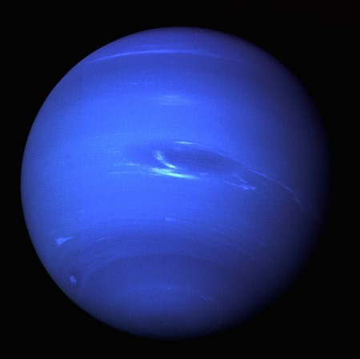
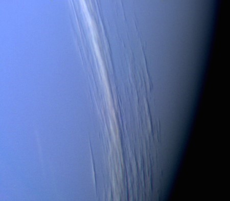

NEPTÜN
Güneş Sistemimizdeki son gezegen olan Neptün; karanlık, soğuk ve çok rüzgarlıdır. Güneş’e olan
uzaklığı, Dünya’nın Güneş’e olan uzaklığından 30 kat daha fazladır. Neptün Uranüs’e çok benzer.
Dünya boyutunda katı bir merkez üstünde yoğun su buharı, amonyak ve metan gazından oluşur.
Atmosferi hidrojen, helyum ve metandan meydana gelir. Aynı Uranüs’te olduğu gibi Neptün’e
de mavi rengini veren metandır. Neptün’ün 6 halkası vardır fakat bunları görmesi çok zordur.

Neptün’ün Voyager 2 tarafından 1989 yılında çekilmiş fotoğrafı(Kaynak:NASA)
Neptün de Uranüs gibi bir buz devidir ve yapısal olarak gaz devine benzer.
Dünya boyutunda katı bir çekirdek üstünde yoğun su buharı, amonyak
ve metan gazından oluşur. Yoğun, rüzgarlı bir atmosfere sahiptir.

Fotoğrafta Uranüs’ün 4 ana halkası ve 10 uydusu görülüyor. Bu görüntü,
atmosferdeki bulutların farklı yüksekliklerini ve kalınlıklarını göstermek için eklenen renkler içeriyor.(Kaynak:NASA)
Neptün’de bir gün 16 saat sürer. Güneş etrafında bir turu ise 165 Dünya yılına eşittir.
Neptün’ün 13 uydusu ve bir tane de onaylanmayı bekleyen uydusu vardır.Neptün, 1846’da Urbain Le Verrier, John Couch Adams
ve Johann Galle tarafından keşfedildi. Sadece Voyager 2 uzay aracı
tarafından ziyaret edildi.
Kaynak: NASA